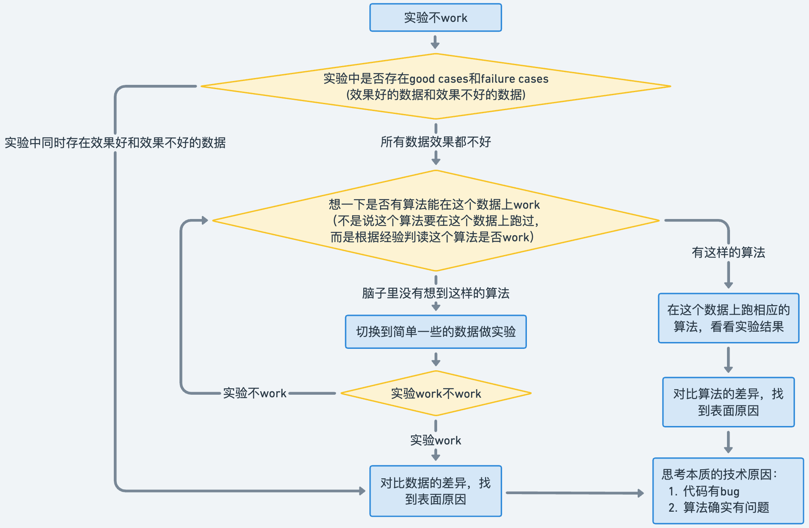

博士生成长之路 Path to A Senior PhD
目录
欢迎大家补充和交流
一、动机 Motivation
“要不要读博士”，是一个非常重要和严肃的问题。
对于这个问题，不管你的答案是什么，也请你看完这个小节的内容。也许我的观点不算正确，但也希望或多或少地能帮助到你。
读博是一个漫长的过程，对于直博的同学需要度过5-6年，对于硕士毕业接着读博的同学也是4-5年的日子。这段时间往往占据了一半的青春时光（20-30岁），这可是人生最美好的年华。所以，在思考这个问题和做出自己的决定前，请慎之又慎。在决定这个问题的答案时，请遵从自己内心的声音，思考以下问题：
1. 我的性格和能力适合读博士？
-
选择适合自己性格的道路：我们需要意识到这个世界上每个人都有不一样的性格，不同性格也适合干不一样的工作或事业。所以，不是所有人都适合科研的道路，而且科研也不会比其他行业更加高尚，选择适合自己性格的工作或事业才是让人生过得开心、快乐和充实的根本。
- 举一个真实的例子吧，他是我这么多年以来第一次碰见的和我一个姓的同学，他非常喜欢游戏，对很多不同类型的游戏都非常了解，他从电子科大毕业后，那一年入学我们组的硕士，导师安排他做一个医学图像的项目，几个月之后，他找到我说他非常的痛苦和焦虑，因为自己觉得很煎熬而且进展也不顺利，我便开导他说不是所有人都适合搞科研，更不是科研要比其他行业更加高尚，忽略周围的噪声，认真思考适合你性格的道路。最后，他转成授课型硕士，1年半硕士毕业后去了网易游戏策划，他家也在广州，后来和他聊天也可以真切感受到他那种发自心底的笑容，也非常为他开心。
- 总结下，大概就是“性格+选择=人生”，意思是说你的性格和你的选择将直接决定你的人生是否快乐，我想应该没有人想让自己的人生一直在痛苦和折磨中度过吧。
-
不骄不躁的心境和严谨认真的态度：我认为这是读博所需要的两个最重要的性格。长达5年的时间里，你将经历：自己的论文屡次被拒，自己的想法被别人指指点点，自己的想法已经被同行做出来了，同学屡次中了好论文和奖学金，同学拿到了你梦寐以求的大厂实习，同学找到了150W年薪的工作……
- 不骄不躁的心境，指的是一种能以平常心对待生活中起起伏伏的心境。我非常喜欢岳阳楼记里“不以物喜，不以己悲”这句词，表达的是不因事物好坏而悲喜的人生态度。做研究和读博士是一个周期非常长的事情，当你能做到不骄不躁的时候，也就意味着你能够时刻保持自己的步伐。也许你并没有意识到自己在默默地前进，但是等你有一天真正达到那一个（阶段性）的目标时，你会怎么样？开心是一定的，但是你应该会淡然地继续前进！反之亦然。
- 严谨认真的态度，指的是能够对待工作和生活中的大小事都认真严谨。这不仅仅体现在学习或者工作上，也体现在生活上。我想大家应该都不愿意和不靠谱的人合作或者交朋友吧。举一个真实的例子吧，他是当年我们组的硕士，他在第三年冬季拿到了另外一个大学的博士录取，大学和地理位置都很好，之后3月份的时候，他在硕士毕业论文还没有写的情况下，和导师商量想要一个月以后安排毕业答辩，这样能赶上春季的毕业典礼。结果可想而知，他被导师拒绝了，并发生了不必要的争执。总结下，如果一个人没有严谨认真的学习或者工作态度，会给自己的合作者或朋友不再赏识你，从而错失了很多很好的机会。
- 总结下，不骄不躁的心境是希望你能尽量远离生活中的焦虑，从容快乐地度过自己的人生；严谨认真的态度是希望你做一个靠谱的人，在人生道路上结交更多益友，为自己争取到更多更好的机会。
2. 我读博士是为了什么？
- 正确的目的
- 我发自内心地想挑战一下，而不是出于虚荣心（下面会提到）。我决定读博之后能有坚持下去的勇气，既然选择了就坚持把这件事做完做好。
- 我喜欢（至少不反感）这个行业，想要在这个行业有更深入的发展。
- 错误的目的
- 出于虚荣心，例如：“所谓的”
更好的工作、更高的薪水、更光明的未来，家人和朋友都觉得读博很牛，身边的朋友都读博了等等。统计学上有一个概念叫幸存者偏差，简而言之就是只看到了生存者的成功，而无法看到那些失败者的故事。众多博士毕业生们最后成为行业大牛的微乎其微，大多数人还是做着普通平凡（不是碌碌无为）的工作。如果你要问“为什么不可以是我成为行业大牛？”这样的问题，那么你可能还没有做好读博士的准备和成为大牛必备的素质，读博期间你会很焦虑甚至崩溃也是大概率会发生的。
- 出于试试的心态。人生确实应该多尝试不同的选择，但是我想说这是建立在你对自己的性格有清晰的认识之上的。读博的过程是需要坚持的，特别是在有大量的代码和实验需要完成的时候，写论文有很多麻烦事情的时候，发现自己的收入和硕士毕业工作的同学比少的可怜的时候。如果只是以试试的心态，那么结局注定是无疾而终，与其浪费时间，不如尝试点更适合自己的事情。举一个真实的例子吧，他是当年另一个老师组的硕士生，一直在犹豫要不要读博士，于是先硕士毕业了，但是正值yq放开，就业市场异常萧条，于是选择继续读博了。1年之后，他告诉我读博士又累又穷，准备退学去找工作了。
3. 我能接受最坏的结果吗？
- 能不能毕业和要不要毕业是两个完全不一样的问题：很多同学会理想化地觉得我应该早点毕业，不需要4-5年，这样能早点拿到学位然后摆脱穷苦的日子。但是，他们太过于理想化现实了，忽略了一个非常关键问题，能不能毕业和要不要毕业是两个完全不一样的问题。
- 能不能毕业，指的是说有没有达到学校或者导师的博士毕业要求。这一点在问题1中提到了，在决定读不读博之前要对自己性格有深入的分析，其中也包括自己的学习能力。如果你能考上国内的重点大学，那么证明你的能力一般来说是足够满足毕业要求的。从我的经历来看，如果你有严谨认真的工作态度，那么即使你的能力稍微差点，也能达到毕业要求。
- 要不要毕业，指的是我毕业之后在就业市场有没有足够的竞争力。很多刚开始读博的同学会想当然的以为尽早毕业，能早点找工作。但是，他们忽视了和你们竞争工作岗位的大概率是读了5年以上，甚至还有博后的一群人。他们的成果往往比你更多，所以早毕业往往意味着成果不如那一群人，找工作的过程中只能占据下峰。所以，选择合适的时间毕业，才是正确的选择，这也是为什么大部分人都需要读至少4-5年的博士。
- 总结下，要想好自己能不能接受花费的这5年青春所得到的最差结果（例如多次延期毕业，毕业时成果不多，找到的工作一般，持续单身等）。
4. 如果你看到这里还没有被我劝退，那么恭喜你，你已经成功迈出了第一步！
二、科研必备技能 Research Skills
1. 代码相关
-
VSCode相关
- VSCode几乎集成了所有写代码所需要的功能。下面列举几个常用的功能：
- ssh远程连接（插件：Remote-SSH, Remote - SSH: Editing Configuration Files, Remote
Explorer）。在Remote Explorer的config文件中，可以配置对应的格式。
- 代码自动格式化（插件：Black
Formatter）。代码整齐是非常有必要的好习惯，能够降低bug的出现概率，也方便自己理解和查找所写的代码，提高效率。shift+ctrl+p之后，输入“format
with ...”，就能设置每次保存文件后自动格式化代码。
- markdown（插件：Markdown All in
One）。非常推荐用markdown写文档，原因在于可以方便地插入公式、图片和表格，同时可以通过插件很方便地转化为html、pdf等格式。
- github（自带GitHub，插件：GitHub
Copilot）。VSCode本身自带GitHub，需要本地配置git环境（windows和mac的配置方式不一样）。GitHub
Copilot能自动根据上下文联想代码，能够节省很多时间，特别是写重复代码的时候（需要付费，10 USD/月）。同时，需要学习git常用的命令，例如git clone, git
clone, git config, git commit, git push等，但是VSCode有图形界面能够把代码push到仓库中，比较方便。
- 个人和项目网页部署。首先需要创建自己的个人网页，例如我自己的页面，主要包含css
style文件和index.html文件，然后可以在
Settings->Pages中进行部署，注意github账号名xxx可能需要对应xxx.github.io。可以在代码仓库中单独创建docs/来创建，例如这个页面对应的仓库地址。
- 其他插件。同样可以安装对应插件以打开html，pdf，MP4等文件，这样如果结果在服务器上就不用下载到本地再打开查看。另外，还有markdown自动转为html文件的插件，可以将markdown写的文档自动转为html，这样就可以在个人网页上显示你的文档了。
-
Linux系统相关
- 命令行大全，以下列举常用的命令：
- cd, ls, mkdir, rm, top, htop, mv, cp, nohup, df, pwd
- scp, rsync, tar, zip, wget, vim
- ps, kill, pkill
- tmux, watch, nvidia-smi
- 需要熟练掌握以上每一个命令行的用处。由于有些命令比较复杂，建议在自己的文档里把常用的命令模板加上，例如“rsync -avP -e "ssh
-i C:/Users/xxx/.ssh/xxx" ./amass* xxx@119.xxx.xxx.xxx:/data”。这样能够提高工作效率。
- python的安装与使用（conda的虚拟环境管理）
- 选择安装miniconda，较为节省空间。然后使用conda创建若干个虚拟环境。
- conda与pip安装模块的区别：conda能够自动匹配合适的模块版本，pip只默认安装最新的模块版本。所以尽量使用conda
install来安装模块，如果没有比如opencv-python，可以再用pip install。
- conda安装torch时，可以选择对应的cuda版本，因为conda在安装torch时会同时安装cuda，所以安装时选择好对应的cuda版本。其次，pytorch3d的安装也可以通过conda，从而避免版本冲突导致的无法使用的问题。而pip是没法做到这一点的。
- docker 实验室暂时还未启用，之前在企业用过，感觉非常好用，完全不用担心环境配置的问题
- 补充内容可以参考 设备配置。
-
Latex相关
- Overleaf在线编辑。写论文通常会使用latex，通常会议、期刊或毕业论文已经提供了对应的模板，写论文需要做的就是往模板里添加自己的内容。
- 公式编写。可以参考这个指导教程，并在overleaf上自己创建一个项目尝试编辑公式。主要用到的有：各种符号，特殊字符、上标，下标，分式，多行公式并列等。
- 文献管理。参考BibTeX攻略。通常，google
scholar里，某一篇文献下面有
cite，其中有BibTex，然后粘贴到.bib文件中即可。
- 图和表格。论文里的图一定要用矢量图（即无限放大不会变模糊的图），通常会在幻灯片里整合，然后将某一页单独保存为pdf，然后进行适当地裁剪，然后放到论文里。表格可以参考这篇论文里的模板，需要自学怎么合并左右或上下单元格等命令。
2. 文档
写文档是一个非常有必要的习惯，是对平时工作的一个记录和积累，在需要用到的时候可以给你提供便利，磨刀不误砍柴功，例如将来某个时候需要参考、做汇报时需要素材、需要经常解决常见问题等等。
- 课程学习文档
- 样例来自于我们组的同学：随机过程、机器学习。
- 如果Latex公式没法在网页上显示，请安装chrome的MathJax插件或者在vscode中打开。
- 如果文档太长，可以在markdown中设置目录跳转，如下图所示：
- 但是发现转成html之后，目录跳转功能没法顺利转换，需要手动在html中设置。（解决有奖！）
- 论文阅读文档
- 样例来自于我自己：论文阅读记录。
- 用markdown中记录论文的重要内容，上述对应的md文件，包括出处、标题、作者、PDF链接、代码链接、摘要、pipeline图。大部分内容在arXiv的论文页（非pdf页）就有。
- 另外一种方式，在看论文的时候，把部分画图或展现方式非常有借鉴意义的部分截取下来，总结在一个PPT里。之后自己写论文的时候，能够借鉴别人的优点来展现自己的工作。Credit to Wei Ji
- 实验日志文档
- 样例来自于我们组的同学：实验文档1、实验文档2。
- 主要用于记录实验中遇到的问题，这样下次自己或者同学遇到相同问题的时候，能迅速提供参考。
3. PPT
- 画论文中的插图
- PPT里非常好用的三个技巧：1. 组合不同图形，实现大图中不同小模块的构建； 2. 手动输入模块的宽度和高度，能够迅速保证不同模块的大小一致； 3.
自动对齐，选中不同的（组合）模块，左右上下居中对齐都可以（不要再用鼠标对齐了！）。
- 部分比较好看的模块，主要通过“小模块叠加+3D视图+旋转”构造，需要花时间在图形设置中尝试不同参数看效果。
- PPT中的额外插件：OneKey Lite，ThreeD等。（暂未尝试，用过的同学，反馈有奖！）
- 实验室日常科研工作汇报
- 汇报PPT的大忌（重要性按顺序递减）：前后幻灯片格式不统一（图片或文字区域来回跳跃）、大段文字内容（无法抓住重点）或文字太小（无法突出重点）、包含复杂的图（无法明白哪个地方是重点）、废话多（3个词可以概括的内容写一整句话）
- 做PPT的目的：希望用PPT更加直观、简洁展现自己想要表达的内容，而不是把PPT作为一个笔记本给观众看。
- 做PPT的要点：与上述大忌对应
- 前后幻灯片格式一致：标题部分、文字内容、插图在每一页幻灯片中的位置尽量固定，字号和字体一致，空间允许的情况下尽量用更大号的字体。
- 文字内容要简洁：文字内容尽量不要用一整句话，把关键词总结出来，与本页幻灯片的目的不相关的内容去掉。不同层次的内容要用能轻易分别不同大小的字号或字体，要尽量突出内容层次。更加详细的内容可以放在最后的附录，需要的时候才展示。
- 插图的展示：插图通常有两类作用，展示方法流程和展示视觉结果。对于方法流程，可以分别给每一部分加上注释，强调图中该区域的重点。有些部分不需要过多解释的话就跳过这一部分，将重点部分标出，并用简短文字强调特点。对于视觉结果，需要把需要突出对比的部分放大或标出，然后用简短的文字解释哪里不好。插图较为灵活，所以简短文字的位置可以比较自由。
- 插入视频的展示：一定要用PPT里内置的插入视频导入，
ctrl c和ctrl v并不会真正导入PPT，换一台电脑就找不到视频，无法播放。
- 学术报告幻灯片
4. 课程
参考 入门3D
Vision的科研
5. 英语
- 主要依靠平时积累：科研中用到的词汇比较有限（专有名词或概念除外），句型和表达也比较有限。所以如果英语不算好的同学，建议在看论文的过程中，积累不认识的单词到文档中或借助在线翻译软件（有道之类的）。可能刚开始阅读英文论文速度较慢，但是需要坚持锻炼和记忆。即使像我这样没有语言天赋的人也能做到，虽然当年学英语的过程实在是太痛苦了。
培养科研能力 Research Capability
博士生应该具有的能力、如何锻炼这些能力、如何做科研项目：参考1[1]，参考2[1]。
博士生应该具有的能力
- 阅读：阅读大量论文、进行文献综述、构建文献树、追踪积累最新论文/技术 [参考]
- 建立对这个领域的视野，知道大家在解决什么问题，培养对重要问题的认知，知道什么是好的论文。
- 积累解决问题的动机和技术。
- 用[文献树]（novelty
tree和challenge-insight tree）锻炼和积累想创新点的能力。
- 创新：想创新点的能力、检索发现新事物的能力、目标驱动的科研能力、提出新技术的能力 [参考]
- 做研究要先懂得检索。不管自己想到什么事，都先检索看看有没有相关的解法或内容以作为参考，这样能给自己省很多功夫，并且拓宽很多思路。
- 目标驱动的科研（goal-driven research）让自己的研究更有规划、有连续性，让自己的研究更容易出类拔萃。
- 实时关注相关领域的进展，其他领域的方法或者思路能够带来关注领域内新的灵感。从而提出新的技术来解决本领域的问题。
- 具体来说：
-
- 规划科研方向的愿景（general
goal），制定达到这个愿景的路线图（roadmap）。一般而言，愿景容易定义，但制定路线图需要对领域有深刻的理解，一般由导师或者高年级博士来思考和制定。
-
- 根据novelty-tree列出的路线图，选择有研究空间的任务，调研这个任务有没有重要的技术难题。选题是对一个科研项目影响最大的一步，而不是后面的想方法。
- 去思考这个任务长远的目标，一个最终形态是怎样的。为什么当前工作只在这些数据上做，而不在其他数据上做。
- 应该尝试更多通用场景（general cases）。追求发现新的失败例子（failure
cases），从新的失败例子入手改进原有的技术。
- （1）在新的任务设定或者新的数据上容易发现新的失败例子。（2）在新的数据上探索方法的可能性，让大家看到新的实验结论，这是很大的贡献。
-
- 从技术层面上分析现在的技术路线（pipelines）在某个任务上不工作的原因，在技术模块（pipeline
module）层面思考可能的原因，然后在技术路线上或高层次（high-level）理解上思考可能的原因。
-
- 上升到高层次理解和想法、技术路线、技术模块层面进行创新，想出一些技术贡献。怎么提升改进技术路线的能力？
- 首先要知道有哪些技术，这些技术在解决什么问题。然后组合其中的某些技术。
- （1）构建challenge-insight tree。（2）选择challenge-insight
tree中的某些技术，通过创新性的组合来解决当前任务的技术难题。（3）把可能的pipeline都列出来，然后对比优劣势，选择一个pipeline。
- 一个高水平科研工作者认为：技术的本质就是对方法做组合，把小的技术组合成大的技术，把老的技术组合成新的技术。**组合已有的技术并挖掘其在新的任务、新的数据上的性质，是一个很大的贡献。**组合不能是
input->A-> intermediate output->B->output这种完全A
+ B的组合（完全拼接式的组合）。组合需要是具有创新性的组合。正常情况下直接拼接两个方法也无法解决问题，否则这个问题就没啥技术挑战。
-
- 在一些数据上验证这个技术贡献，调效果。不能期望论文故事线好听、应用有意思，审稿人就会放过我们的技术贡献。
-
- 当出现新锤子的时候，非常值得拿新锤子来做自己路线图上的某一个里程碑任务（milestone
task），这样容易做出有影响力的工作。注意，不是在新锤子原有任务设定上做改进（比如在NeRF的task setting上调它所用数据集的view
synthesis的效果），而是拿新锤子来解决自己在做的里程碑任务的问题（仍然是目标驱动的研究方式）。
-
- 想idea时需要注意的点（什么样的project不值得做）
- 提出idea并做一篇论文是为了给领域做出实际的贡献，不是为了论文本身。
- 如果一篇论文对领域没有贡献，那么做这篇论文就是在浪费自己的时间，因为我们不会通过这篇论文收获领域的respect，甚至可能收获负面评价。
- 做这种论文的好处：（1）熟悉投稿流程。（2）有几率收获一篇论文（但概率较小）。
- 做这种论文的坏处：（1）浪费时间。做这个project的时间可以用来做更有意义的事情。（2）可能被人负面评价。
- 特别需要注意的点：不要形成依赖导师的心理，要锻炼自己独立自主做科研的习惯和能力。（某种角度上可以说比发论文本身还重要。而且其实自己要有这个能力才能大概率做出论文，不然这个项目基本无疾而终）
- 实践：代码能力、实验能力、分析实验不工作的原因的能力
- 实现自己的想法。
- 在实验中改进自己的想法。
- 在实验中积累对技术方法的认知，通过实验发现一些技术能解决的问题和不能解决的问题。
- 在实验中发现一个科研方向存在什么不足之处、存在什么难以解决的问题。
- 具体来说：
-
- 如何设计探索性实验，保持清楚的实验思路，提升改进Idea的效率。
- 现在的实验是否同时包含了几个探索方向（exploration points）？怎么修改实验来减少要同时探索的点？
- 现在的实验是否同时包含了几个技术挑战（technical challenges）？怎么修改实验来减少其中的技术挑战？
- 我们目前重点想先搞清楚的探索点是什么，最想解决的技术挑战是哪个？
-
- 把复杂的事情拆解成一组简单的事情，从简单到复杂。
- 拆解复杂的实验：从简单的设定开始探索，慢慢加大难度，然后做实际的设定。能够有效降低实验和时间成本。
- 拆解创新的想法：把自己的想法分解成各个部分，从可控的想法开始做起，再加探索性、创新性的框架/模块。
-
- 在简单任务上做实验（toy experiment）
- 简化实验设定，保留想解决的技术挑战。
- 简化数据，保留想解决的技术挑战。
- 验证自己写的模型训练代码是否工作，先过拟合一个样本，然后再过拟合一个非常小的数据集上（比如20个训练样本）。
-
- 实验结果分析
- [结果] 失败案例（Failure case）的可视化长什么样？可能是什么导致的？相应的可能原因也可视化看看。3D可视化工具：
- [结果] 失败案例有没有什么规律，有没有什么固定的pattern？这些规律可能引出背后的技术原因。
- [代码] 各个模块代码的中间输出是否符合预期？
- [训练] 现在方法在测试集上效果不好，那训练集能效果怎样？能过拟合吗？
- [训练] 在其他简单的数据上效果怎样？
- [结果] 记得我们在数据A上效果还不错，为啥数据B上不行？两个数据的区别是啥？
- [方法] 我记得算法A在这个数据上效果没这么差。为啥我们的方法这么差？需要ablation看看哪个模块有问题？也可能是代码写bug了。
- [方法] 如果是把方法简化，能工作吗？效果怎样？
- [方法] 有可视化过某个模块的输出吗？看看是否符合预期，或者是否存在什么奇怪的现象？
-
- 实验结果不理想
- 请注意，快速迭代建立在有效实验的基础上。盲目的做实验可能让事情变得更糟。
- 要经常性地确认自己在正确的方向上：当前的算法思路真的对吗。要避免陷入local minima。建议经常找同学交流讨论。
- 
- 展示：写作能力、展示能力、把一篇论文做得漂亮的能力、做演示（demo）的能力
- 做一篇有影响力、阅读量高的论文，发表在高水平会议、期刊上。
- 把自己的研究故事、提出的技术清晰地展示给同行。
- 用演示来吸引读者，提高论文的阅读量和关注度，从而提升论文的影响力。
- 具体内容见“论文撰写 Paper Writing”。
- 交流：和导师、同学交流讨论的能力
- 让大家帮助自己做科研。
- 交流讨论对于科研的重要性（解决自己的疑问、验证自己的想法、启发思路、促进同学之间的关系）。
- 具体来说
-
- 如何高效地讨论
- 讨论的目的：让大家帮助自己project的推进。不要把“讨论”当作工作汇报。
- 讨论的时候，一些同学害怕“讨论”时间过短，而显得自己没做事情，而可能被导师责怪。所以，通过分享论文、分享繁琐细节的实验现象来凑时长（可能因为遇到一些问题而导致没什么进展才想着凑时长，也可能出于其他考虑才这么做）。
- 如果真的没啥问题，请直接skip讨论，简单同步一下进展和接下来的规划。如果遇到了问题，就列出要讨论的问题，把“讨论”的重心放在“自己遇到的问题”上。讨论结束地很快也没事，效率越高越好。
- “讨论”不要分享论文、不要分享繁琐细节的实验现象。什么内容可以体现自己的思考：“智慧有深度的提问”、“对project的规划”、“对技术创新性的思考”。
- 需要预先做一个简单的ppt。ppt内容可以这么组织：（1）列出需要讨论的问题，和大家一起讨论解决。先抛出问题，然后带着问题去看细节，讲一些自己的思考。看细节的时候，列一些重要的实验现象在ppt里.（2）列出有意思的实验现象和结论。（3）对于科研项目的讨论，有必要每次讨论的时候review一遍technical
contribution（因为已经受够了review里被reviewer喷contribution不够，或者project做了几个月以后发现没contribution而导致几个月白费）。（4）列出自己下一周的计划。
- 实验室讨论原则：（1）充分的沟通交流。交流的时候不要害怕老师、高年级同学，不要因此而不敢问问题。有问题请及时问。实验室的老师、学长都非常友好，乐于解答问题。讨论交流的唯一目的是:
正确、高效，能解决你对project的疑问。（2）平等的交流，不是汇报与被汇报的关系。如果科研上有自己的想法，请表达出来。如果觉得老师、学长有说错的地方，请有礼有节地质疑和讨论。不要一味地听信老师、学长的话，但更不要表面服从而底下做自己的想法，这样会浪费很多交流时间和实验成本。实验室的讨论追求高效真诚的沟通。
四、论文撰写 Paper Writing
论文写作模板：参考[1]。
未完待续...
参考文档 Reference
[1] Learning Research by Sida Peng from ZJU